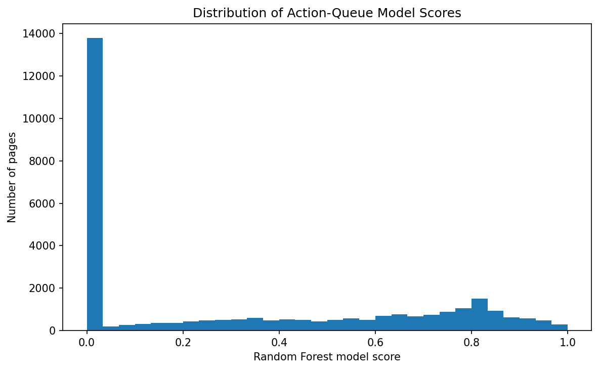

Refresh / Content Opportunity Scoring: A Validation-Aware Action Playbook
A research study on prioritizing content pages for human review using search-performance signals.
Abstract
This study asks which content pages show measurable signals that make them worth reviewing first for a potential refresh or content opportunity. Using FlyRank content-performance data, the analysis aggregates March observations at the content level and evaluates whether measured search signals can prioritize pages associated with a subsequent impression decline. A client-held-out Random Forest evaluation achieved an observed Precision@50 of 0.520, compared with 0.400 for the baseline, while a time-aware evaluation produced a substantially lower Precision@50 of 0.040. The results therefore show useful measured signal in one validation design but do not establish stable predictive performance across the tested time period. The resulting action playbook is recommended as directional decision-support for prioritizing human content review, with additional temporal validation and monitoring required before operational reliance.
1. Introduction / Problem Statement
Content teams often have more pages to review than they can investigate manually. The practical problem is therefore not simply identifying whether performance changes occurred, but deciding which pages deserve attention first and what evidence should guide that review.
This project approaches that problem as a content-opportunity prioritization task. Rather than attempting to automate content decisions, it uses measurable search-performance signals to construct a ranked queue of pages for human investigation.
The analysis also treats validation as part of the decision problem. A ranking that performs well under one split may not remain useful when the data changes over time. For that reason, the work compares a client-held-out evaluation with a time-aware evaluation and reports the difference rather than relying on a single favorable metric.
Decision supported: Which pages should a human SEO or content reviewer investigate first?
2. Data
The analysis uses the March 2026 release of the FlyRank content-performance warehouse, centered on the
fact_content_daily_performance table.
The March slice contains 9,841,378 daily records, covering
31 dates and 331,437 unique content pages.
The analysis uses public-safe hashed identifiers and aggregate performance measurements rather than client names, domains, URLs, private queries, or credentials.
For predictive evaluation, March observations are used as the feature period and April impressions are used only as the future outcome. Future April performance is excluded from the model features to avoid target leakage.
Key measured signals include impressions, clicks, CTR, and average search position.
3. Methodology
Features
Content-level March features include impressions, clicks, CTR, average position, and related transformed search-performance measures.
Label
The outcome label is defined from the subsequent April period:
decline = 1 when April impressions are at least 20% lower than March impressions; otherwise decline = 0.
Model
A Random Forest classifier is used to rank held-out content records according to their estimated likelihood of the decline pattern.
Validation
The primary evaluation uses a client-grouped 80/20 split so that content from the same client does not appear in both training and test sets.
The resulting evaluation contained 7,038 held-out test rows. The validation design separated clients between training and testing, with 35 training clients and 9 test clients.
A separate time-aware evaluation was also performed using earlier observations for training and a later period for testing. This was used to assess whether the measured performance transferred across time.
Leakage checks
Future outcome information was excluded from the predictive feature set. April impressions and clicks were treated as future outcomes rather than model inputs.
The resulting action queue combines model scores with reason codes such as observed impression decline and low-click opportunity to support human review.
4. Results
Validation design
Precision@50
Baseline — client-held-out
0.400
Random Forest — client-held-out
0.520
Random Forest — time-aware
0.040
Under the client-held-out evaluation, the Random Forest achieved a measured Precision@50 of
0.520, compared with 0.400 for the baseline.
However, the time-aware evaluation produced a Precision@50 of only
0.040.
Measured validation gap: 0.480
The large difference indicates that the stronger client-held-out result did not automatically transfer to the tested temporal setting.
Validation comparison
The chart summarizes the measured Precision@50 results across the validation designs.
Score distribution

The score distribution shows the model scores used to prioritize records in the action queue.
5. Limitations & Honest Framing
The strong Precision@50 observed in the client-held-out evaluation did not transfer to the tested time-aware evaluation.
The decline label uses a fixed 20% month-to-month impression decrease. This is an analytical definition, not a universal definition of content decline.
Search performance can change because of factors not represented by the available features, including seasonality, technical changes, indexing changes, search-engine changes, content changes, and changes in search intent.
The action queue prioritizes pages for investigation. It does not establish why a page changed or guarantee that a particular intervention will improve performance.
The tested evaluation periods are limited. Additional temporal validation would be required before treating the ranking as a stable operational predictor.
Interpretation:
The model should currently be treated as directional decision-support evidence, not as a reliably generalizable predictor of future content decline.
6. Ranked Recommendations
The action playbook converts measured signals into a prioritized review queue.
Prioritize:
Use the ranked queue to identify records for human review.
Check the evidence:
Inspect impressions, clicks, CTR, position, and the direction of performance change.
Investigate context:
Check for technical, indexing, seasonal, content, or search-intent explanations.
Choose an intervention:
Only recommend a content or SEO intervention after human investigation.
Measure the outcome:
Compare subsequent performance rather than assuming an intervention worked.
Because the time-aware validation produced a Precision@50 of 0.040, the action queue should be used to focus human attention rather than make automatic content decisions.
7. Artifacts
The analysis generated the following research artifacts:
Ranked action queue
Validation comparison table
Monitoring baseline
Action-queue score distribution
Validation Precision@50 comparison
These artifacts provide the evidence behind the paper's recommendations while keeping the presentation public-safe.
8. Reproducibility
The analysis is implemented in the project repository under
work/notebooks/.
The capstone notebook documents the progression from data inspection and signal auditing through validation, modeling, and the final content action playbook.
The repository contains the implementation, analytical definitions, validation design, and generated outputs needed to inspect and reproduce the workflow.
The analysis was completed as part of the FlyRank ML Internship and uses the internship's content-performance warehouse for research and learning purposes.